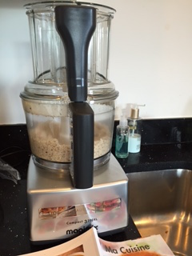
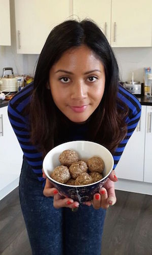

One cup dessicated coconut
One cup almonds
One cup medjool dates
Handful of dried cranberries
One tablespoon of flaxseed
One teaspoon of raw cacao
You will need a good quality blender in order to chop up all the nuts. I bought an ex-display Magimix from eBay which does the job perfectly!
This one is super easy! Simply throw the nuts and coconut into a blender and blend until smooth. Next add the cacao, cranberries and flaxseed. Finally, de-stone the dates and add them one by one to the mixture. Blend until smooth, then make the mixture into little balls with your hands. Place in a bowl, sprinkle with some more coconut and leave to chill in the fridge where they should be stored. You can easily subsititute the almonds for cashews, peanuts or your favourite nuts. I once added sesame seeds for an alternative taste.
As you can see from the last photo, I cut my finger when washing the blender blades. Be careful: they're sharp!